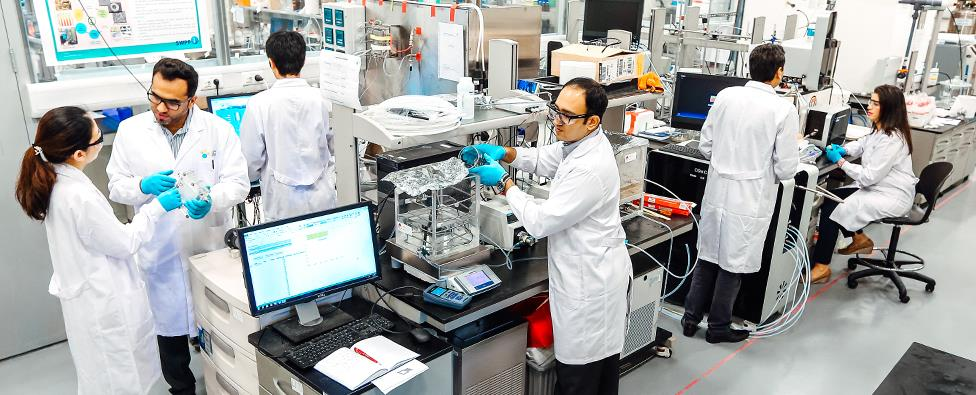
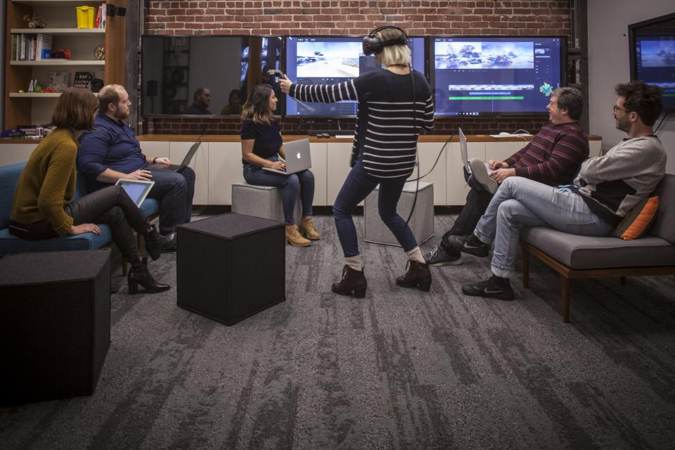

Nowadays, technology has become one the most important need of all the human being. Today, whatever is seen, we do everything is developed by the technology. Technology has made huge changes in our daily life as well. Technology has helped each and every people in this world to connect with each other and many more. People far away from us can easily talk and see asin they are just infront of us. With the help of these technologies the hoslitals can give proper treatment to their patients. Now, people cannot live without the facilities they are getting. The people have become more realastic.
|  |  |
Many health problems are seen nowadays due to technology. Many people don't have the concept only phone, computers are technologies but we use technology for each and every thing. Because of the vehicle, people feel lazy to walk even a small distance deu to which people suffer from many diseases like chronic disease, including overweight and type 2 diabetes. evidence of the biological efffects associated with the lack of movement date further back than you might think-straight into the human fossil records.
Though, technology helped alot in positive way in education sector but the students miss used the technology and made their decisions of life just in fun. The students are more focused in their extra online stuffs rather than studies. Technologies can be used for studies as we can search for any word or any meaning which we don't know but instead of doing that students are busy chatting and making friends through online whom they haven't met in real life. Many cyber crime is done with the help of hacking and stuffs. Though it is illigal people are not scared of the punishment. People find it nothing to hack anyone's account and share any kind of post that is humiliating but the one that faces the problem suffers the most. Rather than using the internet and other technology in a good way the people specially the young generation misuses the most.
These pictures clearly shows how people have become in their real life.